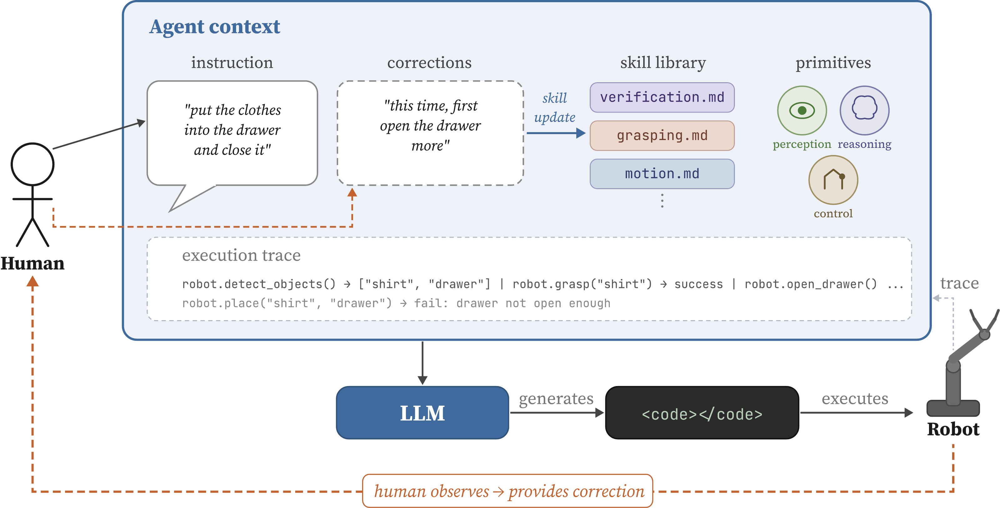
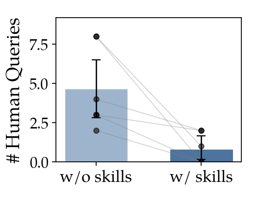
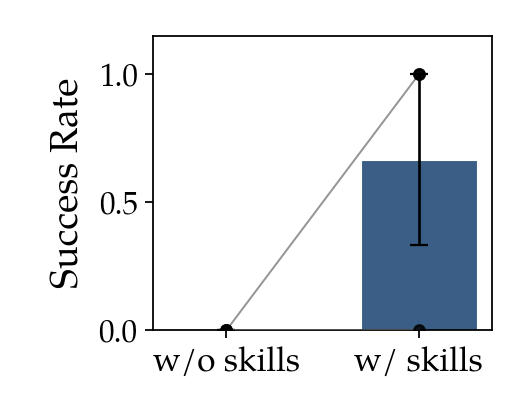
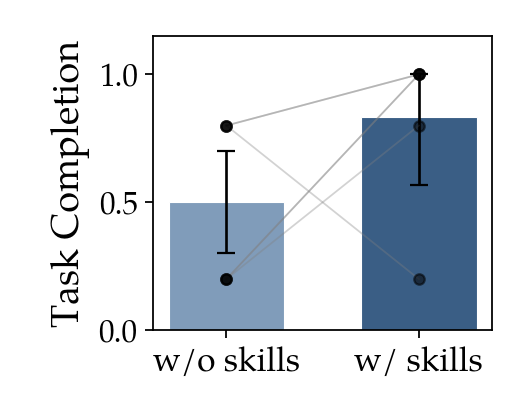

While vision-language-action models have demonstrated impressive zero-shot manipulation capabilities, they remain fundamentally black-box policies that are difficult to interpret, adapt, or correct when they inevitably fail. In this work, we propose ARCHITECT, a framework that treats robot policy acquisition as an interactive program synthesis task.
ARCHITECT leverages the reasoning capabilities of LLM coding agents to synthesize modular robot programs that utilize a suite of perception and control tools. Unlike end-to-end models where distribution shift leads to unpredictable, cascading failures, our modular architecture allows users to isolate failures and localize feedback at the level of abstraction required.
We introduce an iterative process where a human supervisor provides natural language corrections to steer the policy. These corrections are grounded in the policy code by program execution traces and distilled into a persistent skill library, a form of long-term in-context learning which enables the agent to accumulate a repertoire of reusable, interpretable behaviors.
In a benchmark evaluation on a Franka Panda robot, ARCHITECT outperforms state-of-the-art VLA models and program synthesis baselines on complex, long-horizon tasks, including articulated object manipulation and cloth folding. Our results demonstrate that the synthesized skill library enables the system to transfer to novel tasks with decreasing human intervention, providing a steerable and data-efficient alternative to black-box robot learning.

Figure 1: System overview of ARCHITECT. The pipeline takes natural language input and synthesizes robot policies using a suite of tools including control primitives and perception modules. When execution fails, a human provides a language correction, which updates the skill library for future tasks. The agent also receives an execution trace from the robot to help localize code improvements.
ARCHITECT uses a pretrained LLM as an orchestrator agent capable of synthesizing executable robot programs that invoke a suite of heterogeneous tools, including pretrained foundation models, open-vocabulary detectors, grasp generators, and motion planners. The language instruction is parsed and embedded into a system prompt which calls the LLM to generate code. The policy code is grounded in the scene by using a set of control and perception primitives as well as tools such as VQA, proprioception, or CLI commands to read the available skills.
A challenge in human-in-the-loop robot learning is ensuring that corrections are not temporary. When a human provides a language correction during execution, ARCHITECT synthesizes it into a skill: a concise, natural language rule or code pattern that encodes the adjustment. This skill is added to a persistent collection that grows over the course of interaction. Before each subsequent code generation step, all skills in the library are loaded into the agent's context alongside the current task instruction and execution trace.
The tools consist of control primitives (motion planning via cuRobo, gripper control, guarded moves, waypoint execution), perception modules (open-vocabulary detection via Grounded SAM2, grasp generation via AnyGrasp, placement estimation via AnyPlace, VQA, DIFT keypoints, ReKep trajectories), and proprioception queries (end-effector pose, joint state, gripper width). Functions are parameterized with natural language input to ground corrections in feasible behavior.
Side-by-side comparisons of ARCHITECT against baselines across all 8 evaluation tasks. Videos play synchronized — use the controls to play/pause/restart all videos in a row simultaneously.
We evaluate on 8 real-world manipulation tasks on a Franka Panda with the DROID setup, comparing against Code as Policies (CaP), Inner Monologue, MolmoAct2, π0, π0.5, and an ablation using VLM-generated corrections (ARCHITECT-VLM). Each policy is evaluated with N=10 episodes per task.
| Task | CaP | Inner Monologue | MolmoAct2 | π0 | π0.5 | Ours-VLM | Ours-HiTL | ||||||||||||||
|---|---|---|---|---|---|---|---|---|---|---|---|---|---|---|---|---|---|---|---|---|---|
| SR | GCR | NTP | SR | GCR | NTP | SR | GCR | NTP | SR | GCR | NTP | SR | GCR | NTP | SR | GCR | NTP | SR | GCR | NTP | |
| Banana → plate Pick-Place | .20 | .52 | .52 | .50 | .90 | .90 | .80 | .92 | .92 | .80 | .90 | .90 | .90 | .98 | .98 | .80 | .88 | .88 | .80 | .96 | .96 |
| Block → basket Pick-Place | .40 | .52 | .52 | .50 | .76 | .76 | .30 | .64 | .64 | .40 | .44 | .44 | 1.0 | 1.0 | 1.0 | .70 | .80 | .80 | .70 | .82 | .82 |
| Baseball → bucket Pick-Place | .60 | .66 | .66 | .50 | .84 | .84 | .00 | .34 | .34 | .00 | .16 | .16 | .20 | .50 | .50 | .40 | .62 | .62 | 1.0 | 1.0 | 1.0 |
| Apple & bread → bowl Multi Pick-Place | .10 | .59 | .47 | .30 | .51 | .49 | .10 | .43 | .43 | .40 | .64 | .64 | .40 | .65 | .65 | .00 | .49 | .39 | .80 | .88 | .88 |
| Bread from box Clutter | .10 | .38 | .38 | .00 | .00 | .00 | .20 | .32 | .32 | .40 | .40 | .40 | .40 | .44 | .44 | .00 | .24 | .24 | .70 | .78 | .78 |
| Close drawer Articulated | .00 | .00 | .00 | .00 | .00 | .00 | .00 | .00 | .00 | .10 | .23 | .23 | .00 | .17 | .17 | .40 | .60 | .60 | .90 | .90 | .90 |
| Fold cloth Deformable | .00 | .00 | .00 | .00 | .00 | .00 | .00 | .08 | .08 | .00 | .40 | .40 | .00 | .04 | .04 | .70 | .62 | .62 | .80 | .95 | .95 |
| Banana under cloth Long Horizon | .00 | .40 | .40 | .00 | .30 | .30 | .00 | .47 | .47 | .10 | .36 | .36 | .00 | .19 | .19 | .00 | .60 | .60 | .80 | .80 | .60 |
Table 1: Success Rate (SR), Goal Condition Recall (GCR), and Normalized Task Progression (NTP) across tasks. Bold indicates best per task. We compare ARCHITECT-HiTL against CaP, Inner Monologue, MolmoAct2, π0, π0.5, and ablation ARCHITECT-VLM.
In an N=6 within-subjects study, we isolate three effects: the value of human language corrections, skill library transfer to new scenes, and human effort amortization through the skill library. Each participant completes two structurally similar tasks across six conditions that systematically toggle human corrections and skill library access.



Figure 5: ARCHITECT results from human evaluation. (a) With a populated skill library, HiTL trials require fewer human queries. (b, c) Skills from Task 1 transfer to Task 2, raising both success rate and task completion.
@misc{anonymous2026architect,
author = {Anonymous},
title = {A Few Words Go a Long Way: Language Guided Robot
Policy Synthesis},
note = {Under review},
year = {2026},
}